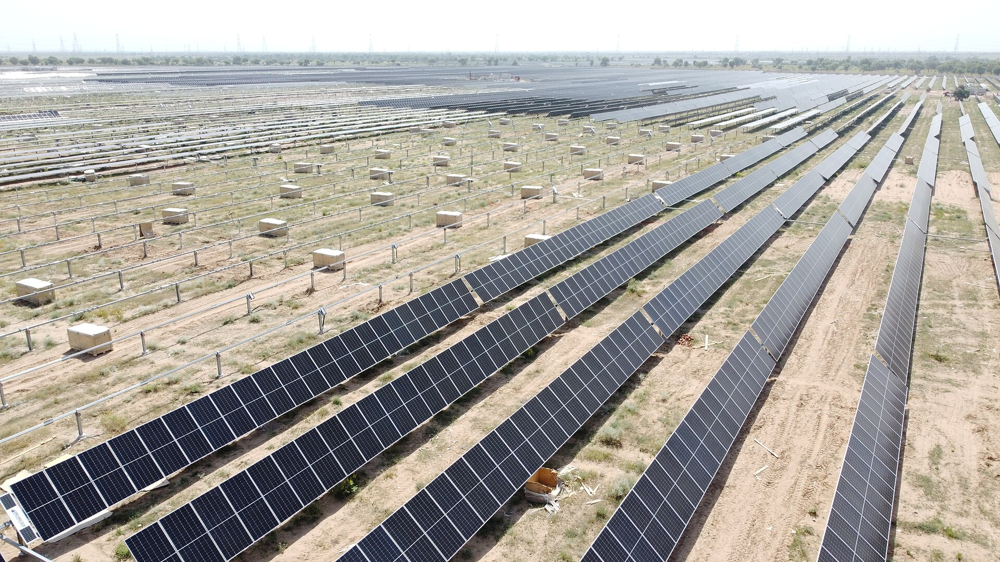
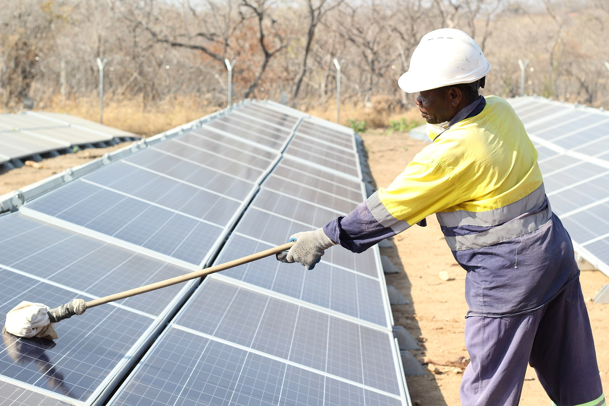

Solara
AI that finds dust on solar panels, measures the power it costs, and says when cleaning is worth it.
Move your cursor: you are the sun.
The three modules
A MobileNetV2 network, fine-tuned on 45,754 photographs of a real panel, reads each image and names how dirty the glass is: clean, light, moderate or heavy soiling.
The same network then puts a number on it: the percentage of power the dust is taking, learned from the panel's measured output together with the irradiance and the time of day.
Module 2 compares a CNN regressor with Random Forest and XGBoost models. See the results.
Then Solara weighs the energy a wash would win back against the water and labour it costs, waits when the forecast shows rain that will wash the panels for free, and books the wash only when it pays.
Tested at five Indian solar parks against fixed-interval washing. See the parks.

Dust is a desert problem
India's biggest solar parks sit where the sun is strongest, and that is where the dust is too. Reported losses from soiling range from a few percent to more than 40% of a panel's output.
Cleaning on a fixed calendar wastes water and labour on glass that is still clean, then lets losses build up between visits. Solara cleans when the panel itself says so.

How well it sees dust
Scores on photographs the network never saw during training.
– accuracy on held-out photographs
– macro F1 across the four classes
– test photographs
How much power it costs
Module 2 puts a number on the dust: the share of the panel's power that is lost, predicted from the photograph, the irradiance and the time of day.
– average error, in percentage points of power
– R², share of the variation in loss explained
| Model | MAE | RMSE | R² |
|---|---|---|---|
| Results are on their way. | |||
When to wash, park by park
Module 3 decides each morning whether washing the panels is worth it, using Module 2's reading of the dust, the expected sunshine and a three-day rain forecast. Simulated on twenty years of real weather at five Indian solar parks.
–
– saved per MW each year compared with washing every 15 days
– washes a year
– litres of water saved per MW each year
| Policy | Washes a year | Energy lost (MWh) | Cost a year (₹) | vs 15-day |
|---|---|---|---|---|
| Results are on their way. | ||||
Trained on DeepSolarEye
One panel, photographed every few minutes for weeks while dust settled and was cleaned away. Every photograph carries the power the panel lost at that moment, measured against a clean reference panel beside it.
Solara turns that measured loss into four classes. Photographs taken in dim light, where the loss reading is unreliable, are left out.
The photographs are shuffled and split by class: one in five is kept back for testing, and the network is scored only on those.
| Class | Power lost | Images |
|---|---|---|
| Clean | under 5% | – |
| Light | 5 to 15% | – |
| Moderate | 15 to 30% | – |
| Heavy | over 30% | – |